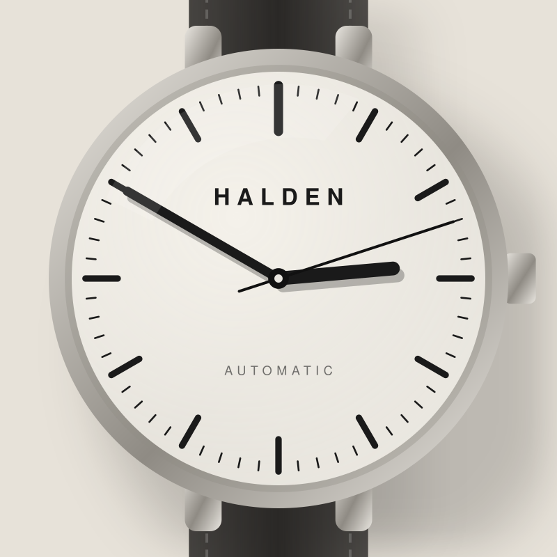

Zifferblatt

01
Ein Zifferblatt, das atmet
Feine Minuterie, zwölf schlanke Indizes und Zeiger, die man in jeder Lichtsituation sofort abliest. Geschützt von gewölbtem Saphirglas mit Innenentspiegelung.
- GlasSaphir, entspiegelt
- ZeigerStahl, gebürstet
- FarbenSand · Graphit · Stein